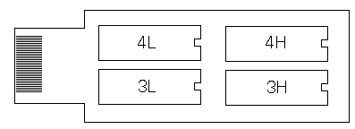

|
|
15.6.3 Eprombank 128K
Eine 128K Eprombank
Die ehemalige Fa. Hard & Soft Herberg hatte eine Epromkarte
mit einer Kapazität von 128K im Lieferumfang. Diese Karte konnte
bequem auch als Bootlaufwerk eingesetzt werden.
- 128K Speicherkapazität am Romport
Die Karte besitzt vier Sockel die jeweils ein 32Kb großes
Eprom aufnehmen können. Als Epromtyp eignet sich jedes Eprom mit
der Bezeichnung: 27256, 27C256. Die verwendeten Eproms sollten eine
Zugriffszeit von maximal 250nS haben. Beachten Sie bitte das jeder
Lösch/Brenn- Zyklus die Zugriffszeit verlängern kann.
Programme die auf dieser Karte verwendet werden sollten
müssen mit den Tools die sich im Lieferumfang des Junior Prommer
befinden aufbereitet und in eben vier Epromfiles gesplittet werden.
Die Eproms teilen sich in jeweils zwei LOW und zwei HIGH. In den
LOW-Eproms werden die ungeraden, in den HIGH-Eproms die geraden
Adressen gespeichert. Bei einem 16bit Lesezugriff werden die Daten
wieder so vereint das ein Wort daraus entsteht.
Achtung:

Beachten Sie bitte das eine solche Karte nur in den Computer
gesteckt werden darf wenn dieser Ausgeschaltet ist!!
Epromkarten gab es auch noch von anderen Firmen oder als
Selbstbauprojekt der damaligen Atari Magazine. Die Zeitschrift c't,
die Fa. Maxon hatten Projekte für Eprombänke von 256, 512
und einem Megabyte Speicherplatz.
Epromkarten jenseits 128K bedienen sich dem Backswich-Verfahren um
jeweils einen 128K großen Bereich für den Atari sichtbar zu
machen.
Eproms für solche Karten konnten bequem mit dem JuniorPrommer
erstellt werden.
|
|
|